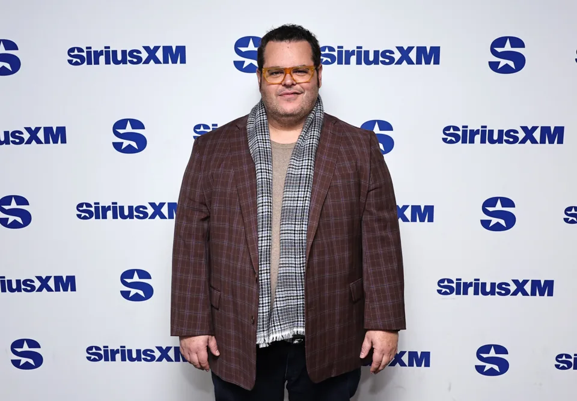
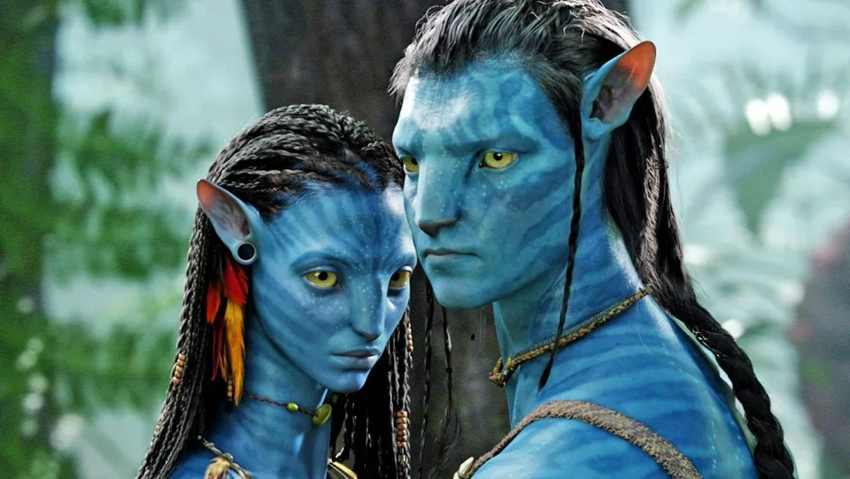

O astro de Frozen, Josh Gad, revelou que fez um teste para um papel no primeiro filme Avatar de James Cameron, mas foi rejeitado porque sua forma Na'vi parecia um "smurf alto e acima do peso".
Segundo a Variety, Gad disse que foi convidado pelo próprio Cameron para voar para Los Angeles e fazer um teste para o papel do melhor amigo de Jake Sully e tradutor para os Na'vi. Este papel foi para Joel David Moore, que interpretou Norm Spellman no filme de 2009.
"Eu me gravei e logo depois recebi uma ligação dizendo que Cameron queria me levar para Los Angeles para um último teste em seu escritório de produção da Lightstorm", disse Gad em seu livro.
"Aparentemente, não consegui [o papel] porque, embora James Cameron tenha ficado emocionado com minha audição, quando me transformaram em um avatar digital, supostamente fiquei parecendo um Smurf alto e acima do peso."
Mesmo assim, Gad ainda aproveitou o sucesso de outras franquias de sucesso, como interpretando o boneco de neve Olaf em Frozen e suas sequências e spin-offs. Ele também apareceu como LeFou em A Bela e a Fera, Muncher em Ghostbusters - Mais Além e em muitos outros filmes.
Avatar, enquanto isso, lançou sua sequência em 2022 e Cameron não vai parar por aí, já que está produzindo o terceiro filme chamado Avatar: Fogo e Cinzas previsto para estrear em 19 de dezembro deste ano.